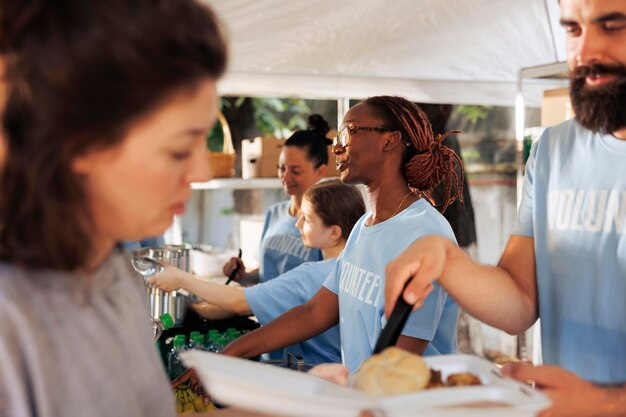

A Pobreza no Brasil
O Brasil é um dos países com maior desigualdade social no mundo.
Combater a pobreza aqui pode servir como um modelo para outras nações
em desenvolvimento. Com uma população grande e diversificada, as ações no
Brasil têm o potencial de impactar milhões de vidas,
criando um efeito multiplicador positivo.
O Brasil já possui um histórico de programas sociais bem-sucedidos,
como o Bolsa Família, que podem ser expandidos e aprimorados com nossa
ajuda. O pais oferece um ambiente propício para parcerias com governos,
ONGs e o setor privado, facilitando a implementação de nossos projetos